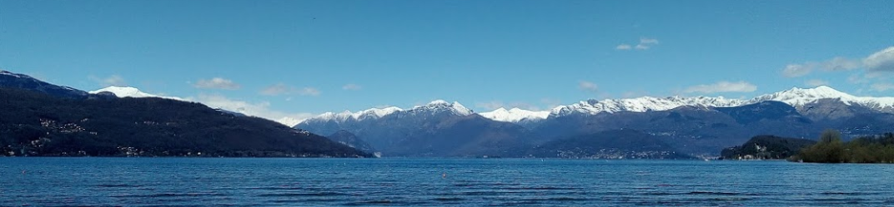

Italian wedding party details
| What?! | Wedding |
| When?! | 7th of September 2019 |
| Where?! | Ispra, Lombardy, Italy, Yurop |
| Place?! | La Baita, Ispra, from about 14:00 onwards |
| Nice | Nice |
General info
Welcome to Italy - Lombardy - the land of the rooster. Our wedding party will be held in the tiny village of Ispra. And while the wedding is probably why you're coming all the way here, there's plenty more to see before, during and after.
The village is directly at one of the bigass lakes - Lago Maggiore. And the weather in September tends to be still boiling hot. So definitely bring some swimwear.
If you're more into nature there's plenty to see - mountains, other lakes, Varese, Luino, Stresa, Intra, Switzerland, Milano, and Isole Belle. Honestly, just open up google maps and land your pointer on a random nearby location, there's definitely gonna be plenty of things to see.
Additionally - all you cyclists - come early and stay longer! The amount of places to ride to is insane and even a 2 week holiday won't do it justice. Whether you like it flat, steep, roady or muddy, there's plenty of variation for everyone.
So it's highly recommended you come around for at least a week to hit some kewl spots. check out the segments around here on strava

Transport
To get to Ispra from Malpensa (or any other airport really) IT'S BEST TO HIRE A GODDAMN CAR I SWEAR TO GOD GUYS HIRE A CAR. Share a ride with other fellow attenders. If you're actually feeling masochistic, feel free to give the amazing public transport a shot, but don't be surprised if it takes you up to 6 hours to get to a village that's less than an hour drive away. Just sayin. Additionally, if you can't drive or something, let us know in the comment box below, we'll see if we can make an arrangement or two with some friends!.
Plan for the D-Day
We will begin the day in style. Early morning at 8ish, we'll hop on our bikes and go for a torturous leisurly climb up to Sacro Monte over Varese. And maybe even Campo dei Fiori if people aren't too tired happy with the sights yet.
For those of you who do aren't planning on bringing bikes, you're still encouranged to go and see the place cos it's pretty and shit. It also belongs to UNESCO, so you know it's good. Plus you get some nice views from up there.


After we're done hanging around Sacro Monte, we'll head down to Ispra justa after 12, which should give us plenty of time to arrive completely covered in sweat.
For those of you who are staying around you can explore Ispra in the meantime until about 2-3ish.
Once we arrive, we plan to kick off the feast at 3ish. You should all be here by now. If not, your loss ¯\_(ツ)_/¯. There's gonna be a quick kewl ceremony and stuff with coffees and other stuff, and after that we can feast our butts off.
The food will be more or less a free flow buffet, with some wine tasting as a desert. Once you're all stuffed, we'll crank out the music and you get to burn it all off until the end of the night!

Accomodation
While Ispra itself is pretty small, and offers limited accomodation, there's plenty to go around in the neighbouring villages:
And many others. Use Airbnb/booking.com to get some more offers under the belt. Unfotunately Baita itself will be reserved for us
If you're coming, please fill out the stuff below:
Do not hesitate to cotact either of us if you need more information. See you all in Ispra!